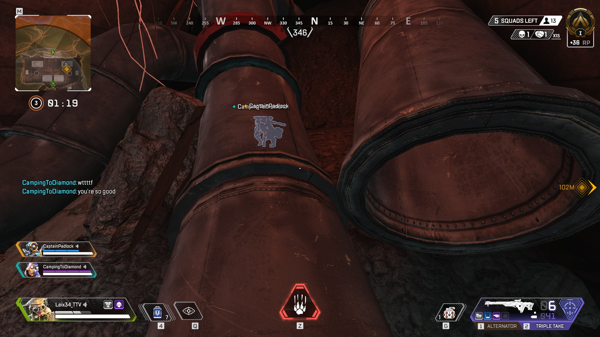
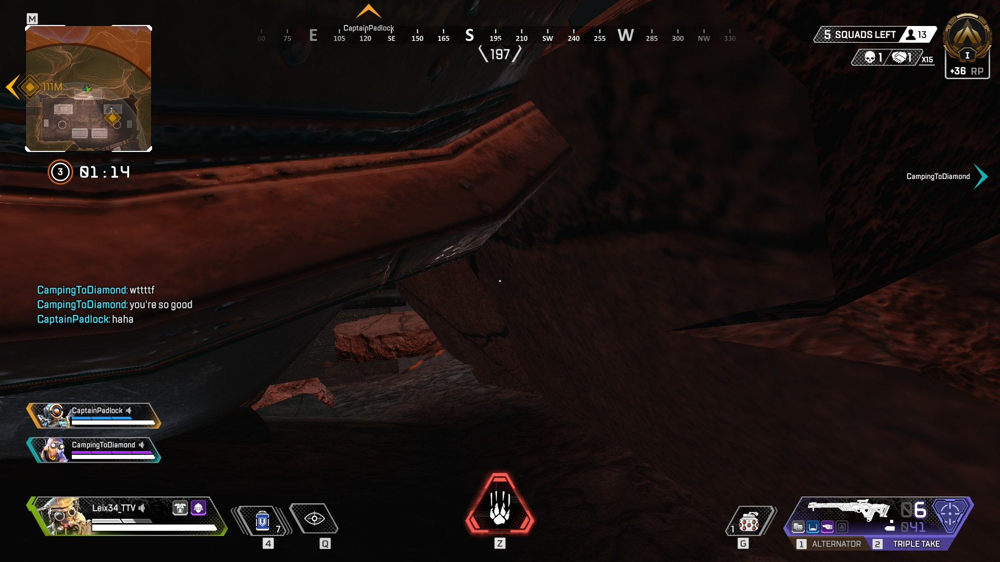

This spot is very likely not going to be your initial priority since it is on an extremity of the map. The final zone will not include that spot very often but it is quite effective.
Ennemies could be hiding in the same building but the surrounding of this hidding spot is not very exposed to the rest of artillery so you should be able to hide even if there are combats outside. Once you enter the building at the North of artillery, you team will have to go around the pipelines and lock your characters between the ground and the pipes. You are not very visible from the outside and ennemies will probably not expect you there but you can keep your guns out since the pipelines are large enough. That way you are ready for a fight if another team scans your location.
